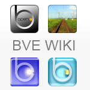

Full database of all BVE2/BVE4/OpenBVE route and train Add-Ons from across the world
Full database of all BVE2/BVE4/OpenBVE route and train Add-Ons from across the world

The home of Graymac's Ballyfeckin route, and a number of Irish trains, and guides for openBVE.

Host of the Blueridge route, a very high detail fictional route set in the Virginian countryside

International BVE discussion forum and resource provider

Alternative Homepage with collection of addons

Anthony Bowden's excellent website. Hosts his several high-quality projects such as Birmingham Cross-City South. Also a co-developer for OpenBVE.

Home of the former trainsimcentral team. Hosts the amazingly detailed Network West Midlands and London Underground Northern Line Routes


Wiki and collection of Community Pages, Links, Routes ad Trains

Indonesian and japaneese stuff. Note: this page is only available over archive.org